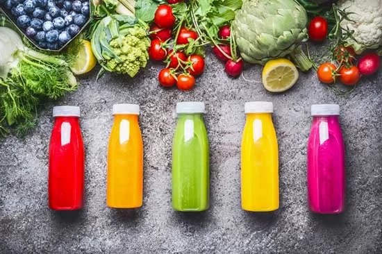
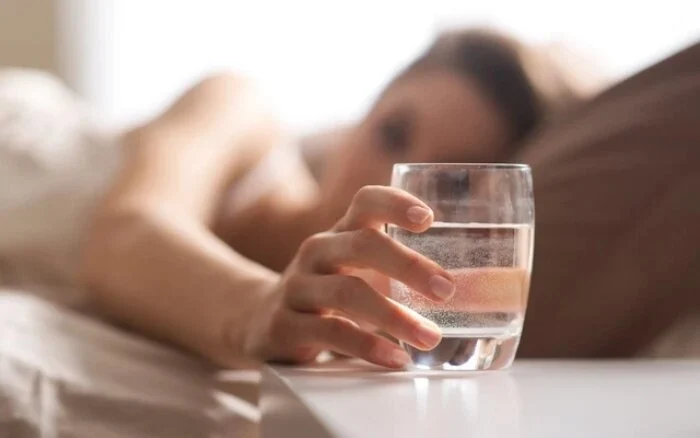

AQUABAY Doanh nghiệp văn hóa tiêu biểu thời kỳ hội nhập năm 2024
25-06-20244 loại nước uống vào buổi sáng gây hại cho sức khỏe bạn nên tránh
Cùng AQUABAY tìm hiểu 4 loại nước vào sáng sớm bạn nên tránh để bảo vệ sức khỏe nhé.
1. Nước trà để qua đêm
Nước trà đã pha nếu để lâu khiến các chất trong trà như axit amin, các loại đường trở thành dưỡng chất giúp vi khuẩn và nấm phát triển. Không chỉ vậy, các thành phần dinh dưỡng trong nước như trà polyphenol, vitamin cũng sẽ xảy ra phản ứng oxy hóa khiến các thành phần chống oxy hóa trong nước trà bị kém đi, từ đó giảm giá trị dinh dưỡng và bảo vệ sức khỏe của trà. Vì vậy, sau khi thức dậy không nên uống trà đã pha từ hôm trước.
2. Nước trái cây
Nước ép trái cây có vị ngọt, nhiều đường do đó không nên dùng nhiều khi bạn đang đói bụng. Vì uống nước trái cây vào sáng sớm sẽ làm giảm cảm giác thèm ăn, cản trở việc ăn uống vào bữa sáng - bữa ăn quan trọng nhất trong ngày.

Hơn nữa, nước trái cây được coi là đồ uống lạnh nếu uống buổi sáng có khả năng gây kích thích dạ dày, ảnh hưởng đến dạ dày, dễ gây nên tình trạng đau bụng, tiêu chảy nếu uống vào sáng sớm.
3. Cà phê
Nhiều người có thói quen nhâm nhi một tách cà phê vào mỗi buổi sáng. Đây là thói quen tốt giúp cung cấp năng lượng, thúc đẩy quá trình trao đổi chất và tăng cường khả năng tập trung cho ngày dài làm việc.
Tuy nhiên cà phê có tính axit, không phù hợp lúc đói vì axit sẽ phá hỏng lớp niêm mạc, gây ra chứng ợ nóng khó tiêu và các vấn đề về dạ dày. Ngoài ra, cà phê còn chứa hàm lượng lớn caffeine, khi được hấp thụ vào lúc đói sẽ gây ra cảm giác bồn chồn, run rẩy, nhịp tim đập nhanh…
4. Nước lọc từ máy
Hiện nay, nhiều quảng cáo từ các thiết bị hiện đại có thể lọc nước máy thành nước có thể uống được ngày. Do đó, nhiều người có thói quen uống nước trực tiếp ngay tại vòi.
Điều nảy ảnh hưởng đến sức khỏe bởi sau một đêm các chất kim loại có trong đường ống và vòi nước đã có phản ứng hóa học với nước, tạo thành chất gây ô nhiễm. Ngoài ra, các vi sinh vật trong nước cũng sinh sôi nảy nở qua đêm. Vì vậy nước lã qua một đêm sẽ trở thành loại nước gây hại cho sức khỏe, chứa nhiều loại vi sinh cản trở hấp thụ chất dinh dưỡng và quá trình hô hấp.
5. Uống nước gì tốt nhất vào buổi sáng?
Để khỏe mạnh bạn hãy bắt đầu ngày mới với một ly nước AQUABAY khoảng 300ml ấm, ngay sau khi ngủ dây. Việc làm này không chỉ giúp bạn bổ sung lượng nước cần thiết mà còn làm sạch ruột, giảm độ nhớt của máu, thúc đẩy tuần hoàn hiệu quả.
AQUABAY với tính kiềm tự nhiên cao (không hóa chất) pH 8.5-9.5, khi sử dụng thường xuyên giúp trung hòa axit dư thừa trong cơ thể, hỗ trợ tốt cho sức khỏe, đặc biệt là hệ tiêu hóa.

Được sản xuất bằng công nghệ điện phân nước tiên tiến từ Nhật Bản nước AQUABAY có cấu trúc phân tử nước nhỏ hơn nhiều lần so với nước uống thông thường, giúp bù nước nhanh chóng tới mọi tế bào sau giấc ngủ dài, thúc đẩy quá trình trao đổi chất, đào thải độc tố ra khỏi cơ thể nhanh chóng thông qua bài tiết và mồ hôi.
Nước AQUABAY được khai thác từ mạch nước ngầm quý tại Long An nên hàm lượng khoáng chất tự nhiên phong phú như: Na, Ca, Mg, K… tồn tại dưới dạng ion cơ thể dễ hấp thu, tăng sức bền và dẻo dai cho bạn. Đồng thời, nước i-on Life giàu các Hydro hoạt tính giúp bảo vệ tế bào, ngăn ngừa lão hóa.
Ngoài ra, việc uống nước ấm vào buổi sáng giúp thúc đẩy quá trình trao đổi chất, đẩy nhanh tốc độ tiêu thụ thực phẩm có trong hệ tiêu hóa, giảm lượng mỡ tích trữ trong cơ thể.
Để khỏe mạnh vào buổi sáng bạn hãy lựa chọn thức uống buổi sáng phù hợp bảo vệ sức khỏe. Đừng quên hãy để AQUABAY đồng hành cùng sức khỏe của bạn mỗi ngày nhé.